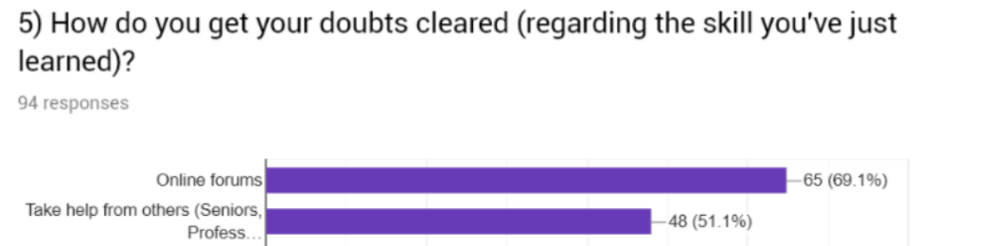
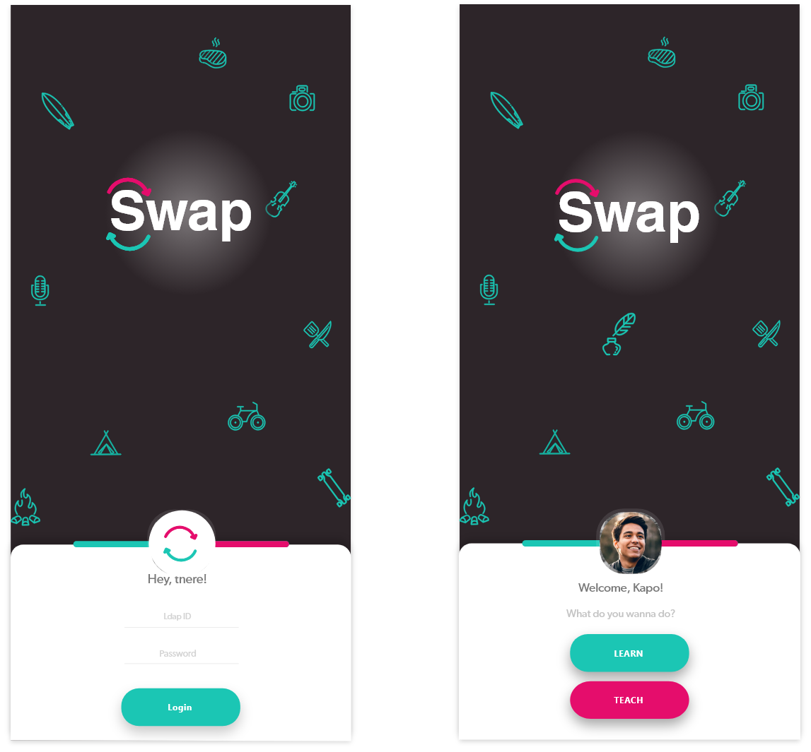
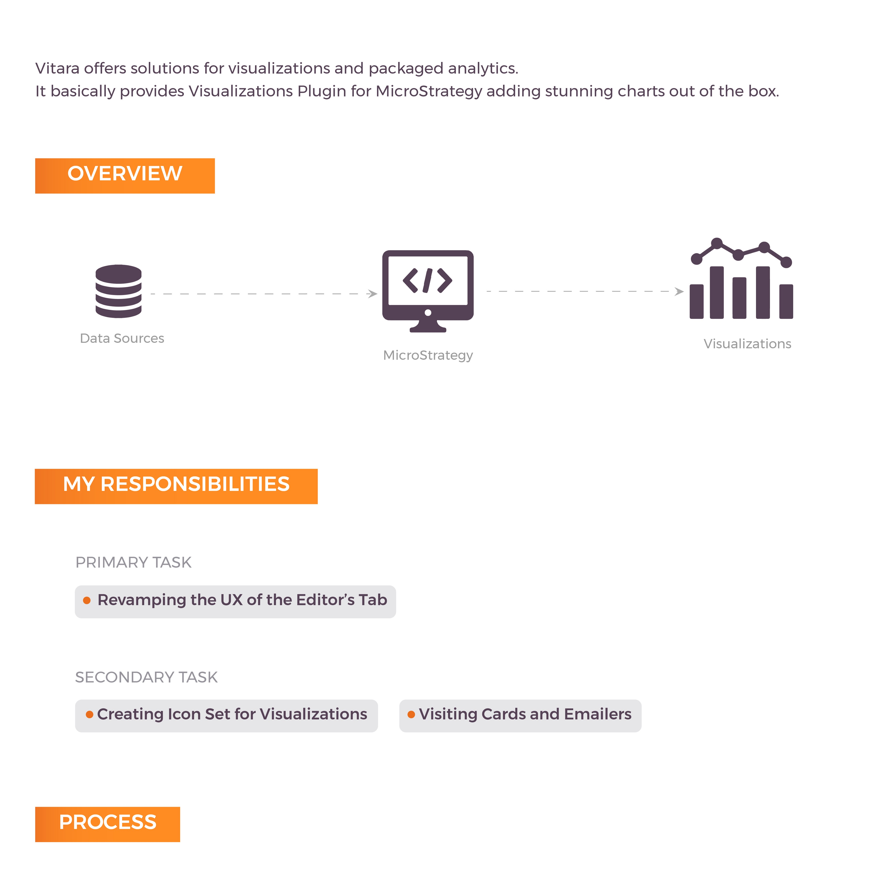
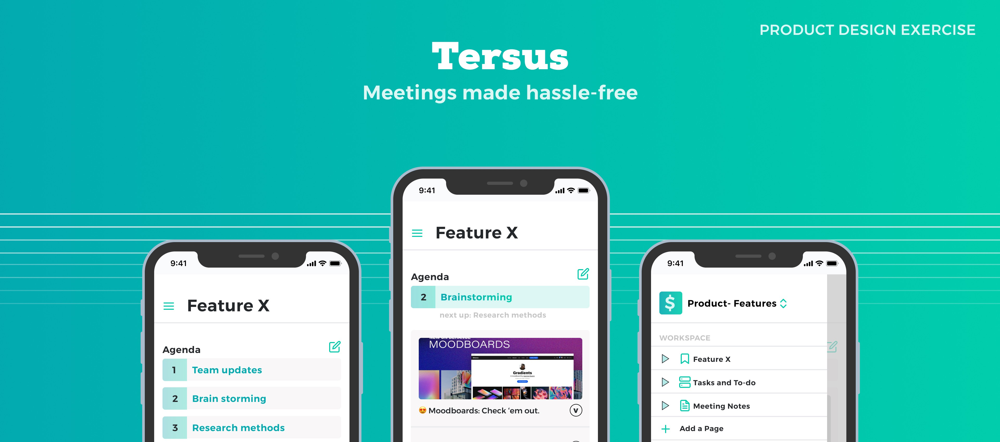
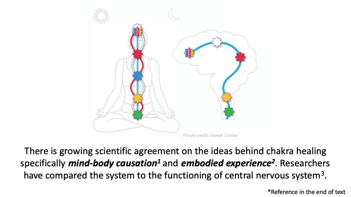
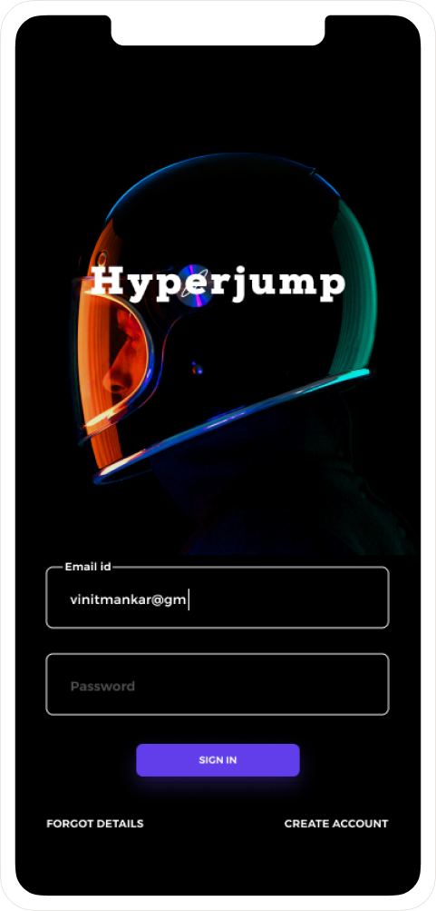
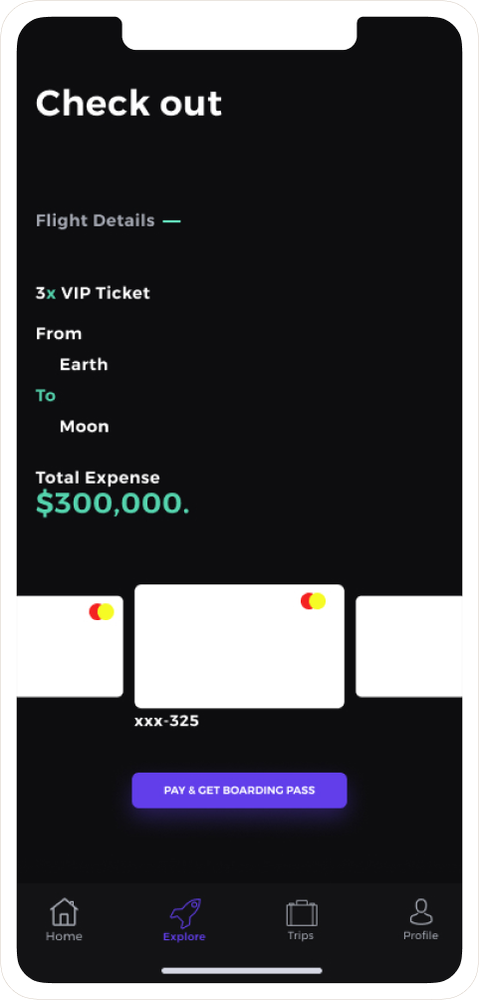

Hey!
A final year undergraduate student studying Electronics at IIIT Allahabad.
I’ve always found people interesting, the way they talk, the way they behave, the way they interact. This fascination for people drives me to become a Product Designer.
I’m just a curious lad trying to solve problems and spread happiness. I’ve always believed that ‘Making stuff is the heart of everything’.
If not refining experiences you can find me reading, planning trips or sketching (read scribbles) or gearing up for hackathons. Being an ENFP, I enjoy small talks and deep meaningful conversations equally.
Design an application to support a product/device which when attached to a switchboard completely automates all home switches and appliances
Objectives
Information Architecture
Wireframes (Lo-Fi)
Home Screen
The user can add/view the rooms and the number of active devices in one each of them.
Rooms
Has the list of all the devices connected and an option to view the surveillance camera modules installed in each room. User can switch ON/OFF the device or schedule an event.
Schedule an Event
The user can schedule an event for each device in the room.
Routines
The user can create a routine to enable all the devices in a room at a particular time.
Statistics
Day/Week/Month wise breakdown of the total power consumed and the bill.
Plateau of Infinite Research
As part of this project, I designed an interactive interface comprising a table top and a wall-sized display showing content on 100 top scientists of University of Paris, Saclay. I was mentored by two brilliant researchers in the field of HCI- Prof. Michel Beaudouin-Lafon (head of Human-Centered Computing group at Laboratoire de Recherche en Informatique, Universite Paris-Sud) and Prof. Wendy Mackay (Principal Research Scientist, INRIA Saclay)
PROJECT AIM AND SUMMARY
The research internship took place in the context of a project at LRI in collaboration with Inria-Saclay for the Learning Center of Université Paris-Saclay. The project aims to create a large wall-sized installation comprising the the photographic portraits of over 100 researchers of Université Paris-Saclay by Didier Goupy, a renowned photographer, along with a rich network of information about the researchers, that will eventually be a permanent exhibit at the Learning Center. The goal of my internship project was to apply the methods and tools developed in the Human-Centered Computing group, LRI to create an interactive installation using tablets/table top kiosks with touch displays for user-friendly navigation to access the installation. I was part of an international group of research interns.
INSPIRATIONS
A good example I found was at The Cleveland Museum of Art. They have set up a display that helps the visitors know more about the artworks etc. and plan their tours accordingly. I found this project similar to ours in the context of the wide and varied audience present and the motivation to help a person know more about a subject.
Below is an installation I explored with an intention to give a more engaging look as compared to a traditional hyperlinked interface. I also explored ideas around the orientation of the portraits (in a manner that they are random but the relation amongst them is still marked)
The table top below helped me look into ideas around a bigger Kiosk with which multiple people can interact simultaneously instead of many smaller ones. This may also encourage interaction amongst the audience.
VIDEO BRAINSTORMING
I led a Video Brainstorming Session (A new technique that I got familiar with) with the members of my Group. We divided ourselves into three groups and participated in the session.
GOAL FOR THE SESSION
To come up with interesting ideas for visual and interaction design of an interface that shall be used by a wide variety of audience to know more about the presented researchers on the wall display in a public setting.
DIMENSIONS WHERE WE COULD BE CREATIVE
1. Medium for information sharing
2. Interaction between the wall display and the interface
3. Information to be displayed
4. Links between various researchers and information.
All the groups came up with videos that gave me a great number of ideas to work upon in all the four dimensions mentioned above.
I worked to explore the design space and the various dimensions of the system based on the ideas discussed in the video brainstorming sessions. I also organized another brainstorming session (traditional) to explore some specific dimensions of the system.
WIREFRAMING AND PROTOTYPING
Based on the brainstorming sessions, ideas were developed and prototyped. We decided to go with multiple tabletop kiosks with touch interface for use by interested audience to access the content presented on wall sized display.
I proposed using a Kinect to carry out the interactions between the wall and the tabletop interfaces and designed a video prototype using Kinect for gesture recognition.
VIDEO PROTOTYPE( INTERACTION BETWEEN THE WALL AND THE DEVICE )
The Interaction between the wall and the device was video prototyped with the help of a lab mate. The following uses Kinect for gesture recognition.
Few Interesting Points
1. Since the content on researchers that are being looked up by interested audience is static on the wall display, any new person walking past will get information about which researchers are being looked up and belonging to what field of research and if that person is interested, he/she may go and start up a conversation with the user who is already looking the researcher up. This will encourage interaction amongst the audience.
2. When the user points towards a portrait, it gets zoomed up along with the ones close to it , this provides the user with an opportunity to switch the selected researcher if he so desires.
Concerns:
1. When a user points towards the screen and if simultaneously the display of the Kiosk changes, and if the Kiosk catches the attention of the user, it might affect the direction of pointing by the user. We will have to set the speed of change etc. such that the pointing of the user doesn't get affected by the change in the display of the Kiosk nearby.
After many discussions, it was agreed that due to multiple constraints, it would be uncertain whether or not Kinect would work well in the public environment. Hence I designed a system that works perfectly when operated without a Kinect and is independent in its working. The use of Kinect was left as a future add-on if required.
WIREFRAMING ITERATIONS
Next, I moved on to what interactions shall happen on the tabletop interface. Multiple iterations were made in order to come up with the ideal interface that best fits the needs.
THINGS KEPT IN MIND WHILE DESIGNING THE INTERACTIONS
1. The photographic portraits are art pieces displayed on a wall sized display. Even though they are digital, they must be handled with subtlety and care.
2. The system must work independent of the Kinect.
3. The interactions shall happen in a physical space and with another physical object and hence should complement the space around a user.
VIDEO PROTOTYPE
MY EXPERIENCE
This project offered me a good exposure to international research in the field of HCI under two amazing mentors. I could not have utilized my summer in a more productive manner. I was part of an international group of researchers from China, Indonesia, Argentina, France, America, Switzerland, London etc. and I learned a lot from this cross-cultural exposure including life lessons that shall really help in my professional and personal life. I was also lucky to get a chance to participate in the ERC Creative workshop conducted during my internship that offered exposure to various techniques used in the LRI.
I look forward to future collaborations with my two mentors and more exposure to international research.
PS: Like everyone else, I too fell in love with the city of Paris.
ABOUT
My college, IIIT Allahabad has a portal called Help Desk wherein the students can register their complaints regarding the infrastructure. The complaint filed is then forwarded to the maintenance cell which then reviews the problem and repairs it.
>However, I found some major UX problems with this portal. So I decided to take up the matter and shoot the issues.
Each complaint filed by the student is considered as a Ticket.
Research
Viewing the tickets.
To view any ticket, students need the tracking ID of that particular ticket. This is a bummer as there’s no way for a person to view the progress of the ticket apart from the student who has filed the complaint.
John an Electronics major noticed that the street light near the admin block isn’t working. So he files a complaint on the portal. Kapo the fresher, discovers the same problem and wonders whether the complaint has been filed or not. This leads to a bad experience.
Filing a complaint.
While creating a ticket the student has to chose a category the ticket belongs to. This task often gets confusing due to the varied options offered by the portal.This violates the Hick’s law thereby increasing the cognitive load. The next step is to fill a long form which consists of personal details and the description of the problem.
The time it takes to make a decision increases with the number and complexity of choices.
Pan Points
Diving a further more. I came to know that there are two types of tickets
Which consists of the public infrastructure. The street lights, the benches.etc. An issue with these things directly affects a large set of students.
Would include the requests for mending the infrastructure in the users own hostel rooms. This issue affects only the students staying in the particular room.
The portal doesn't differentiate between these tickets. And therefore it asks for the tracking ID each time a person wants to view the filed complaints.
The Portal only shows two states, whether the issue is solved or not. This leaves the users wondering whether the ticket is received and the authorities have started working on it or not.
Basically, the portal lacks transparency as it fails to show the movement of the ticket.
As the issues related to the Public Infrastructure are not made public, There’s no way the students could tell the maintenance cell which ticket or problem has to be solved first. (Repairing a street light on the busiest road of the campus has to be given more priority than fixing the tennis flood lights.)
There’s no way a student could prioritize the tickets related to the public infra.
Students use the portal to sort their personal tickets (problems related to their hostel rooms) but they tend to ignore the issues related to the public infra as they assume that the complaint has already been filed.
This ignorance leads to an overall bad experience.
The Solution
#1. All the complaints filed (tickets) are to be classified as General and Personal.
The General tickets would consists of the complaints regarding the public infrastructure(Street lights, benches.etc) and the personal tickets would include requests for mending the infra in the students’ own hostel rooms.
#2. The General Tickets would me made visible to all.
As the General ticket would consists of the problems every student has in common the ticket would be made visible to all users. So that they can track the progress of the ticket.
#3. A timeline bar which would show the status of the ticket.
The progress of each ticket would be shown in stages.
#4. Clubbing of categories
A lot of categories in the drop down have similar nature. And hence they could be clubbed together thus decreasing the number of options.
#5. Prioritizing the general tickets
Giving the users power to prioritize the tickets so that the maintenance cell would efficiently work on the issues in hand.
Ideation
As the discoverability was an issue I went ahead and built a mobile platform which tackles this mess to a great extent.
I started looking around for inspiration to shape my concepts. Following the Jacob’s Law
Users spend most of their time on other sites. This means that users prefer your site to work the same way as all the other sites they already know.
And then I came across some platforms which beautifully have implemented the concepts I had in mind.
This is the Invision’s feedback center. I loved the way they showed the movement of each issue which provides a sense of time (how much has progressed and how much is pending).
Bonus — The same thought goes into the extensive use of progressive loaders over normal ones. I found this article quite helpful to understand the power of progressive loaders.
This helped me in fabricating the timeline bar showing the status of the tickets.
The upvote and downvote feature of Reddit works evidently in bringing the post on top. Reddit precisely explained this feature as:
If you think something contributes to conversation, upvote it. If you think it does not contribute to the subreddit it is posted in or is off-topic in a particular community, downvote it.
This helped me solve the prioritizing issue.
The drop-down in the existing portal contained over 20 options which was a lot more. Drop-downs however are on the verge of extinction on mobile apps. This article by Zoltan explaining the alternatives for drop-downs (Checkout the video at the end of the blog, its awesome!) helped me a lot in planning out various ways to tackle this problem.
I mapped the 20 options into 4 major categories. Based on the description the maintenance cell will allocate the task force to sort the issue.
The Solution
Having a clear idea of what I wanted the app to be, I started sketching out wire frames based on the flow of the app.
Information architecture
A detailed Information Architecture was made. Iterations for the same were done after various discussions with our mentors in view of the requirements and constraints of Microsoft and other collaborating organizations.
Task Flow
Task flows for every task possible on our product were clearly defined. It helped figure out the loopholes or design gaps in our concept.
User Journey
Based on the task flows, a complete user journey was defined to further detail out the concept.
LEARNING
1. The art of working within constraints of various organizations (developers, management, marketing team etc.).
2. Identifying and attending to design gaps.
3. Presenting the design to the developers in a manner that helps them easily understand the flow of the application.
WIREFRAMING AND INTERFACE DESIGN
Paper wireframes were designed for the interface being conceptualized. They were later digitalized on Balsamiq tool.
High fidelity interface was later designed following 'Material Design' Guidelines proposed by Google. Efforts were made to make the product interactive and engaging.
The interface was then given to the developers for front-end development with specifications about each and every element used in the interface like:
1. Font
2. Spacing and dimensions through grid lines
3. Colors
4. Icons used
LEARNING
1. A good idea about the 'Material Design' Guidelines.
2. Learned to design an interface within the constraints of the developer.
3. Learned about the requirements and expectations of a developer from a designer.
4. Learned to coordinate effectively with the developers and Management officials.
Tangible User Interface for learning
My team and I designed an educational game for the mentally disabled children. The game aimed to teach the concept of counting and numbers and the correct sequencing of the numbers to the children with the help of a toy train. The train, along with a remote, serves as a tangible user interface with which the children are expected to communicate. We were mentored by Dr. Keyur Sorathia (Head, Embedded Interactions Lab). My role primarily comprised of Primary and Secondary Research, Brainstorming, Conceptualization and defining interactions and Video Making for documentation
Duration
Methods
Deliverables
12 weeks
Feb. 2017 - April. 2017
User study, Literature Review, Brainstorming, Storyboarding, Task Flows, Wireframing, Prototyping
A working Prototype of the system along with a video prototype.
Problem Statement
Design an interactive tangible user interface that teaches counting to the mentally disabled children. It should be effective and relatable to the real world and should, to its best ability, help the children to "understand" numbers.
User Study
We as a batch visited Shisho Sarothi, a training center in Guwahati, India, with a vision of an inclusive world where children and persons with disabilities have equal opportunities and are empowered to participate freely and live fully with dignity and respect.
We spoke to Mr. Armaan Ali (the director) and various teachers for specialized training of the children to know more about the problems faced by the children.
Major learnings for the User Study
We majorly learned about the teaching methods used by the teachers to develop the necessary mental and motor skills that shall help the children in living their lives independently and fit into the outside world to the greatest possible extent.
While teaching numbers, the following were of utmost importance.
1. Form or structure of number
2. Count order
3. Concept of greater and lesser
Efforts were put in to combine real life objects to the learning process. This helped them relate better and understand the concepts to a greater extent. Another well known technique used was that of repetition. When something is repeated a lot of times in various manners, directly and indirectly, it tends to be learned better with a longer lasting understanding of the same
Unfortunately, we were not allowed to click pictures of the classrooms and tools used.
Objectives
Based on the learnings and problems observed and studied, we defined our Objectives as follows:
1. To teach the children the numbers in the correct order or sequence.
2. To teach the concept of the quantity a number holds.
3. Teach them using instances from the real world so they are directly connected to the real world and the numbers. do not remain an abstract concept for them.
4. To improve their motor skills, concentration and patience.
5. To keep them entertained and happy.
Key points from the literature
Counting Techniques
1. Rote Counting: In this technique, the student is made to repeat the sequence of numbers while pointing at the same simultaneously. This helps the student to memorize the sequence and recognize the numbers visually.
2. Point Counting: In this technique, the student is made to count a set of objects in the correct sequence without missing any number or repeating the same number more than once.
3. Rational Counting: In this technique, the student learns about the quantity, a number carries. He realizes that the last number counted is equal to the total number of object counted till then. This forms the basis of addition for the child. This is also a pre-requisite for reading time on a traditional clock.
4. Counting on: In this technique, the child learns to count from any number (say 3, 4, 5 and not 1, 2, 3, 4, 5) that may or may not be the beginning (the number 1) as taught to them.
While teaching counting, one first needs to teach a child the concept of ‘1’. Various methods can be used for the same. Once the child is clear about what ‘1’ signifies, the concept of ‘one more’ is introduced. This helps to teach them the number to i.e. 1 and 1 more. Once the child is comfortable with the concept of 2, the following numbers are introduced as before.
Brainstorming and Conceptualization
Games have long been a very effective method of learning. They are fun and addictive and make learning an enjoyable process for the children. We decided to work on making an interactive game, with a screen-less interface that shall also try to improve the motor skills of the children.
We looked into various real life scenarios that can be implemented into a game. In this manner, we meet two goals: one, they learn the concept of counting and second, they are made familiar with a real life situation that will help them better relate to it when they experience the same in reality.
For our game, we chose the working of a train on a railway track.
Seeing something work after performing an activity or a difficult task acts as a strong positive reinforcement. It encourages the child to put a little extra effort into the activity in order to receive the reward of a working product. Keeping this in mind, we conceptualized a mechanism where “running of train” is considered to be a positive reinforcement for the child.
The concept
A number (say x) is entered on the remote by the student or teacher that turns the feedback light blue. The child is expected to place and connect the compartments in the correct order upto the entered number (i.e. x). This shall result in the running of the train on the track which shall stop after 'x' rounds where x was the entered number.
Appropriate feedback is provided as the child interacts with the game.
User journey
Prototyping
Components Used
1. Train Set (1 engine, 4 compartments)
2. Two Arduinos (Micro-controllers)
3. Two Nrf modules (For data-transfer)
4. Jumper Wires
5. Resistors
6. Motor
7. Battery
The electronic circuit of the game is as shown below:
The circuit consists of two parts, the train and the remote.
The remote consists of an Arduino connected to an Nrf module that sends signals wirelessly to the Nrf module connected to the Arduino that is further connected to the train circuit.
The train consists of an Arduino that is connected to an Nrf module that receives information from the Remote. The circuit is divided into 5 parts. One is the engine and the other four represent their respective compartments. Each compartment is connected to its consecutive compartment by a main connection. This main connection is soldered with three other wires to form a single male connection.
If a teacher enters a number, say 4. When the child connects the first compartment to the engine, the second compartment to the first, the third to the second and the fourth to the third, the train starts to run with a gap of 5 secs (Time required for the child to move the hands away after making the connection)
Challenges
We prototyped the entire circuit and the working can be seen in the video above, However, due to constraints of the train set available, the circuit could not be embedded into the trains perfectly.
The connections were not firm and the connections had to be precisely made for the train to run.
Since this required great motor skills, it was not able to test the game with the children.
In the future, we shall use 3-D printing to carefully design the train structure so as to contain the circuit comfortably and the connections can be made easily.
Acknowledgments
We are very grateful and offer our gratitude to Dr. Keyur Sorathia, our course instructor for introducing us to the concept of Tangible User Interfaces and its principles. He was also a great help in conceptualizing and detailing of the chosen project. We thank Shishu Sarothi for helping us get great insights on the condition of the mentally disabled children and the problems faced by them that prevents them from blending into the outside world.
We are also very thankful to the Electronics Club of IIT Guwahati for helping us with the prototyping of the conceptualized solution. We especially thank the secretary of the club.
ABOUT
It was during our college fest I heard a pianist play River flows by Yiruma for the first time and I was hooked.
I borrowed a piano from a friend and started with YouTube tutorials. I followed them faithfully. But it was hard for me to play with both my hands simultaneously. Even a ton of hand coordination videos couldn’t help me get it right. I went to online forums to check out the FAQ’s but I felt that my petty doubts had no place there
How long does it take on an average to play chords with my left and melody with my right? Why can’t I do it? God I’m gonna break this.😫
The answer obviously is it depends. But I started losing interest and so I went to my friend to return his piano that’s when he gave me a tip on coordination. I gave it a shot and it worked.
That’s the thing with self learning if you’re stuck in between and you couldn’t get your query sorted you tend to lose interest.
So I took upon this challenge to improve this experience for the students. So that they stay motivated throughout and have fun while learning.
Research
To know more about this journey and to define the exact problem faced by the students I floated a google form in my college network which was filled by 94 students.

Among the people taking help from the online forums around 77% students say that they have to search a lot for trivial things. Also a lot of students don’t mind solving a few doubts and helping their peers.
Problem Statement
Students tend to lose interest in the skill they’ve started learning online.
Ideation
This is my favorite part😍! I started brainstorming as to how this experience can be made more engaging and fun.
So I started listing down the things my solution would revolve around.
Always foster sharing and collaboration- Two very powerful mechanisms to generate personal fulfillment and to create strong connections. When people do something fun together, they release oxytocin, and as a result they connect at a chemical level.
Help people make memories- We barely remember project details or work related items. But we certainly remember the fun and exciting moments. The solution should always promote the creation of learning experiences, that is, Memories.
Solution
We already have few clubs which promote arts and technical skills. So I thought of making hobby groups amongst them to tackle this problem but this would lead to more hassle. Hobby groups would be a better option if there are more people interested in that particular skill. For a small set of people interested in a skill, This won’t be that efficient.
As the target audience is students staying on-campus. I preferred a mobile app over website because it is more engaging and helps in making the connect more easier and quicker.
So, the solution narrowed down to create a mobile platform to promote peer-to-peer learning.
User journey
There are two primary use cases:
1.) To get help in learning a new skill
2.) To teach a skill
I started sketching my ideas and thinking of ways in which the app would progress. I took inspiration from InstaEdu and Chegg although these platforms were way different from what i was planning but they helped me in planning out the directions in which the app should move ahead.
Information Architecture
Once Iwas satisfied with the flow I started sketching wire frames on the paper to translate this flow into screens.
Wire frames
The next stage was to design screens. So i dived into Xd.

Login using Ldap ID
Learner: Home screen
Learner: Booking a Class
Teacher: Editing the Class | Accepting the booking requests
P.S — I learnt to play river flows perfectly and I don’t even know what a C minor is 😜

Overview
This was during a Winter school I attended on UX Design when all the attendees were asked to solve a real-world crisis using the methods they were teaching us. We were divided in the team of 4. My team had Mrudhvika a back-end developer, Ritwik the engineering fresher and Rajesh a product manager. We all had some experience in designing pretty screens for apps and websites but this was something new and that got us all excited.
Getting down to the task we started listing all the problems we faced in our everyday lives. Our discussions varied from the tiring daily commute of the metro that Rajesh faced to the strict attendance policy I and Ritwick have in our colleges.
We instantly started thinking the solution to these problems 90% of which had an app or a website as a solution. When we went to our mentor with this bunch of amazing solutions that we had in our mind And expected a “Woaahh! You guys are geniuses” he blocked us off by saying “I don’t want to know the solution, Tell me more about the problem.” And that’s when we realized
Work more on the problem, Even if it means devoting a huge amount of time to it. Once you know the exact problem the solutions will come naturally.
The first big task was to decide on a problem area, to begin with. Just as we were scratching our brains to find the perfect problem, Mrudhvika started telling us about the problems she faces during menstruation and how she has to carry a tampon. This interested us all because we knew so little about periods. And Menstruation being a taboo issue there’s not much work being done in those directions.
For starters, Here is a Manly Guide to Menstruation. This beautifully written piece by Mike LaVigne explains it all.
Research
We started our research with the ‘unavailability of tampons’ as an issue in hand.
Now was the time to get the users involved and know more about their problems, the ways they are dealing with it. This was a challenge for us because menstruation being a taboo, women weren’t so open in talking to us about their issues. So we had to come up with ways of gathering the data.
We wanted to gather the data of a varied user base. Mrudhvika, being the only girl in the group went ahead and did the user interviews. We also prepared a questionnaire and floated a google form in our network. We gathered the data from the users of the age of 12 to 55.
The research, however, brought quite interesting results ahead, kicking the problem we thought the user had out of the scene. We thought the ‘unavailability of tampons’ was the major issue. But based on the results we came to know that they used to carry sanitary pads during their periods it wasn’t much big of a deal. ‘The main issue was, however, the availability of pads if they had their periods before or after the expected date.’
The menstrual cycle consists of 28–35 days. The flow lasts for about 3–5 days at the beginning of the cycle. Women are generally aware of these dates and hence they carry a sanitary pad. But often due to stress and other factors, irregular periods are common. An irregular period is the one which occurs before or after the expected days of the flow.
Based on the data collected by user interviews about how do they deal with the problems related to irregular periods we did affinity mapping. We sorted them according to their age groups.
This helped us realize the common links of how women from different age groups approach the problem and how do they go about solving it.
We clubbed the common links together and realized that a lot of them tackled the problem of irregular periods by borrowing a tampon from their friends. The results from the google form that we floated also indicated the same.
According to a survey conducted by World Health Organisation (WHO) as many as 67 percent women have had to borrow a sanitary essential from a friend, colleague or a family member.
Define
A lot of women always asked for a sanitary product at the time of need. So instead of redefining the wheel, We just decided to make this experience a better one. Hence we began identifying the pain points in the existing methods.
Also, we decided to narrow our user base down from to the age of 18–30 years old. Because we had a lot of data gathered around them and hence we knew them better.
Pain Points
To explore the vertical, We dived further to know more about the specifics of the problem.
I always text my friend, If I want to ask her an extra. It’s so embarrassing.
A majority of the users we interviewed had to say the same thing. They were always hesitated to ask for a sanitary pad.
I have to be aware of my surroundings, It’s always difficult in front of boys.
We decided to explore the roots of this problem.
Ideation
My team then gathered around the table and we started discussing, shooting random ideas and hearing the user interview tapes over and over again understanding the users, sensing their tone.
Imagine a world where no Men exists at all, A world full of women. Will the women hesitate to ask for a tampon?
This gave us a lead that one of the major problems of the discomfort is the lack of knowledge among the men about menstruation.
#1. So ignorance amongst Men was an issue.
Let’s take a step back, If the problem is unavailability of a tampon during irregular periods, Why don’t we make the users carry a pad every day?
#2. We could cultivate a habit amongst the users to carry a pad every day.
Let’s take a step back, If the problem is unavailability of a tampon during irregular periods, Why don’t we make the users carry a pad every day?
Solution
Now, knowing exactly what to solve we again started brain-storming finding ways to tackle the pain-points. We restricted ourselves from thinking about apps and websites at first.
All of us coming from an engineering background always thought more of the complex solutions, of how we could make an app or a portal? But sometimes the solution is much simpler and trivial. We just have to look for it.
To tackle the ignorance amongst the men we thought of various ways that could help us solve the issue.
#1. of a badge on the bag.
As our user base was from 18–30 years of age most of them were either college students or working professionals. We designed a badge for the bag. If the user is carrying a sanitary pad with her, she will put the badge. This would act as a signifier for other women in need of tampons. The badges would create a buzz amongst the men and when they see every woman putting it up, They would get used to the fact and this will curb the ignorance to some extent. The badge would also remind her to carry a tampon.
#2. A special compartment in the bag.
We could have a special compartment in the bag for the sanitary pad. Using suitable sensors we could detect whether the pad is present or not. If the compartment is empty the user would be alerted using a mobile notification. Women already use various apps to keep a track of their cycle, We could easily integrate this feature within them.
#3. Pad share.
We thought of this App concept. It’s basically Uber for tampons. If the user is in need of a tampon she will get to know the people near here carrying an extra pad. She could then request a pad to the nearby user. The women on delivering it get karma points.(WIP)
What did I learn?
# You are not the user
All the projects I worked on earlier, was me having a problem and then building a solution around it. This was the first time I was designing something that I would never use. This taught me a great deal about not making assumptions and validating each step with the user.
# Fall in love with the problem
I still remember Mrudhvika calling me at 3 a.m and blabbering about this one woman she met facing the same problem. We were obsessed with this problem. And each user interaction leading to something meaningful would excite us all.
# Don’t ask directive questions
Initially, We went wrong with the form and asked some questions which had leading answers and then we had to compensate by working more hard on the user interviews. This article by Emily on How To Ask User Experience Questions is a gem.
# When stuck, Zoom out
This happened a lot during brainstorming sessions we would get all enthusiastic shooting ideas, building on each other’s thoughts, modifying every bit. We would hit a dead-end. Then backing up 10 steps and zooming out helped us realize what is the actual problem that we are trying to solve. And that would surprisingly get us back on track.

Overview
We often see our colleagues struggling during meetings. Even if the session is well planned, they need to meet with their other attendees, hear each other’s opinions, debate options, make clear-cut decisions on the next steps and prepare action items.
Role
Product Designer
Problem
Design a mobile-based application that lets you handle meeting proceedings comprehensively and effectively solving the issue of recording meetings while tackling all the things that one might want to do during or after a meeting.
Process
Target User
Working Professionals attending meetings regularly.
Assumptions
Research
Methods
1.) Interviews.
Why
1.) Validate Assumptions 2.) Find and prioritize needs 3.) Discover more problems
I called a few of my friends who interned with various companies and startups to get more insights into the problem.
Analyze
I did affinity mapping to empathize more with the users and to find common grey areas to solve for.
Based on these findings, I went ahead and created the user personas.
User stories
To relate to the life of personas, I created storyboards for each of them.
Brainstorming
Ideate and Sketching
I jot down points and information and refer to it every time I make a design decision. Before starting to design, I played around with different Note-taking, Productivity, and To-do apps (Notion, Google Keep, Trello, Slack) to understand the design.
Wireframes
Lo-fi wireframes to redefine the sketches in order to make the idea more concrete.
High Fidelity Designs
I went ahead with green as my main color because it has calming effects. I used Figma to design app screens.
Lessons Learned
Let people drive conversations- During the telephonic interviews, I asked open-ended questions to get to the pain points and let the user drive the conversations. If we’re looking for some insight into how users think about a problem, open questions always give us a lot more detail.
Overview
TechnoMysticism is an exploration of supporting contemplative meditation practices through technology. We designed virtual reality experiences corresponding to two practices: Chakra healing and Qigong. Together the experiences are intended to cover the design space of how technology can support such practices.
My Role
Designer, Developer, UX Researcher
As a part of this project, I designed and developed the entire VR experience for implementing the Chakra meditation practice. I was mentored by Prof. Aman Parnami (Head of Weave Lab, IIIT Delhi), with Jatin Arora as my team lead.
I studied tons of research articles to gain insights about the intersection of HCI and neuroscience fields. I also read blogs, websites, and news articles throughout my internship period to stay up to date with the latest trends.
Design
About Chakra Meditation
Meditation practices have traditionally been used to promote relaxation and wellbeing; they have recently gained more significance among the different communities with the goal of healthy living.
Chakra healing is an ancient meditation practice from the Buddhist Nalanda traditions (600–300 BCE). A chakra healing session typically deals with balancing the energies of the chakras, the seven energy centers of the human body through mind relaxation, contemplation and breath control. Through the VR experience, we aimed to support these different elements through technology, to make them easier for novice users.
Routine
As part of the experience, the user engaged in a 25-minute chakra healing session in VR; as an exploration, the experience was designed on basis of a guided session popular on Youtube (this one). He was asked to sit cross-legged, he found himself looking at his virtual avatar sitting in the same posture. Microsoft Kinect 2 device was used to track his body movements and accordingly adjust the virtual body. During the guided session, the guide asked him to focus his awareness on the body regions corresponding to the seven chakras, to visualize their energies, to cure them through conscious thought (elicited through the guide’s speech) and breath control. As he engaged in this process, he saw the seven chakras appear in his virtual body, their intensity increasing with every breath that he inhaled; their auras becoming cleaner over time. Visualizing the specific dynamics of the different chakras in the virtual body, the user felt them in his physical body. The user’s attention was critical to enable this experience and was manifested as feedback in the visual intensity of the virtual body; the body became brighter as the attention increased, became dull when the user became distracted by everyday thoughts.
Concepts backing the research
Embodied experience, Bimodal causation as the basis of Chakra healing
The chakra system is the Indic central nervous system as defined so in Buddhist and Hindu tantra traditions. The seven chakras arranged across our upper body along the spine, from the pelvic bone to the crown of the head influence our experiences. The chakra healing process is targeted at affecting these body systems through conscious thought. The mental and physical elements interact through bimodal causation (mind affects the body and vice-versa) at the interface of mental states and energy patterns.
There is growing agreement in the neuroscience community to support the existence of both embodied experience and bimodal causation, hence strengthening the principles behind chakra healing. This comes in addition to growing empirical evidence regarding the positive effects of meditation practices in general. Given these developments, such explorations of trying to enable chakra healing through modern technology are of great interest; to expanding the outreach of the practice and for scientific investigation.

Body ownership illusion (BOI) and Interoception
BOI’s put the user into a perceptual state of embodying a virtual avatar, creating the illusion that the body is “mine.” Such an illusion has been studied to induce strong cognitive and behavioral effects like altering the user’s perception of his physical body or to make him empathetic towards other people. We used the body ownership illusion to provide the user with an interoceptive body map for the sensations elicited during the guided meditation process. We hypothesize that the BOI and the interoception processes mutually strengthened one another.
Guided imagery is a technique used in alternative medicine wherein the patients are exposed to visuals of their corrected self like disease-free, healed skin; the conflict between what the patients see and what they feel has been observed to help cure the condition. Similarly, with this experience, the expectation is that viewing the chakras in the virtual body might assist the user in feeling them in his physical body. Synchronous visual and interoceptive stimuli might work together to strengthen the user’s BOI.
Attention biofeedback
User’s mindfulness and attention play a significant role in enabling the expected experience. Typically, novices with no meditation experience face difficulty in keeping their heads clear, their attention constantly diverting to everyday thoughts. Hence we used the attention retention theory (ART) to assist them in this process. Specifically, we sensed the user’s attention using Muse 2 EEG device and utilized it to control the illumination of the virtual body.
(Guided) meditation process
The guided meditation audio plays an important role in tying the experience together for the user. As per the Nalanda traditions, the seven chakras represent different areas of our life like relationships, higher-order thinking, and creativity. The guide talks about these associations to elicit specific mental states in the user; Parallelly, he asks the user to focus on the body sensations corresponding to the chakras, hence triggering the mind-body connection. Second, to this, the audio from a human actor helps establish the user’s trust on the visualizations in the virtual body, and on the whole intervention in general.
Evaluation
Usability Testing
We tested this experience with 12 participants: all being college students in the age group 18–25 years, 7 males and 5 females. We conducted qualitative interviews to gauge early perceptions regarding different design features like body ownership, interoception, attention biofeedback, and audio guidance. Overall, all participants liked the experience and found it to be relaxing; reports on other attributes like being able to feel the chakras varied. While some participants were able to sense some or all of the chakras in their bodies, some did not, and few felt sleepy. As per expectation, those who did feel the chakras developed a stronger BOI, while the others reported on viewing the dynamics in the virtual body “as a movie.” Breath synchronization with the ball in the virtual body was also reported to assist embodiment. Most participants reported on being able to follow the guided audio; One participant highlighted its importance during the interview saying “its important to not lose the audio if it is lost the connection would break.” Another participant described his experience by saying “I became completely devoted to him; what he was saying I was able to feel.”
We attribute the differences observed in the user study to participants’ varying meditation abilities and to the limitations of the study design. Not all participants could maintain the same level of mindfulness during the session which could have limited their interoception of the body sensations. Many participants experienced backache while sitting in the cross-legged pose for this long while few became uncomfortable due to the heavyweight of the HMD. Moreover, the user studies were conducted all through the day as per the availability of the participants and researchers; time of the day might have also affected participants’ ability to meditate.
In conclusion, we consider this to be an early effort to explore a paradigm that can prove to be very effective. Beyond the limitations, the study uncovered many interesting insights that can help develop future iterations of this experience, and can provide directions for further scientific investigation in this area.
There has been a long on-going investigation to discover the roots of human emotional experience. Recent convergence in the neuroscience community points towards embodied theories of emotion: that the emotions get generated by the body and are then sensed by the autonomic nervous system to create a conscious emotional experience. Building on these insights from therapeutic practices and neuroscience, we sought to investigate if emotional interoceptive feedback from a virtual body designed to elicit body ownership illusion in VR can be used for emotional regulation.
My Role
Designer, Developer, UX Researcher
As a part of this project, I designed and developed the entire experience. I was mentored by Prof. Aman Parnami (Head of Weave Lab, IIIT Delhi), with Jatin Arora as my team lead.
I studied tons of research articles to gain insights about the intersection of HCI and neuroscience fields. I also read blogs, websites, and news articles throughout my internship period to stay up to date with the latest trends.
Design
About Interoception
Interoception refers to the ability of the human body to perceive sensations from inside itself. Much of this perception remains unconscious; what becomes conscious, i.e., interoceptive awareness involves the processing of inner sensations so that they become available to conscious awareness. For instance, we can get aware of our breathing when mindful. This interoceptive awareness plays a critical role in emotion regulation: our ability to become aware of internal sensations related to our affective states allows us to self regulate our emotions; lack of this awareness leads to emotional disorders. In the past, researchers have developed therapeutic approaches to increase interoceptive awareness; patients are taught to become mindful of the sensations felt in different parts of their body through techniques like body scanning.
Routine
The user stood in a virtual reality environment, saw his virtual body in a third-person perspective. The virtual body followed the user’s body movements as tracked by a Microsoft Kinect to establish perceived embodiment. Next, the user saw a short 8 minutes horror movie played on a two-dimensional screen within VR; horror has been called a body genre due to the bodily sensations that it elicits and hence fits well within the scope of our exploration. While the user watched the movie, the virtual body displayed visualizations corresponding to those bodily sensations as experienced by the user; We expected this display to make the user conscious about the fear sensations and hence assist to regulate them. The experience was tested with 8 participants (4 males, 4 females). The experiments were conducted during day time after taking informed consent from all the participants.
Challenges
Designing the display of the Interoceptive emotions
The virtual avatar displayed visualizations of the fear emotion that the users felt within themselves as they watched the movie. The place of the visualizations within the body was decided by referring to the Bodily maps of emotions as presented by Nummenmaa et al. in their paper. The researchers used extensive self-reports from 701 participants to define the maps of where different emotions were felt; fear was observed to be felt primarily in the chest and the abdomen region. Next, we tuned the intensity of the visualization with the participant’s arousal as observed from the galvanic skin response (GSR) sensor, and with the dynamics of the horror movie itself.
Galvanic skin response or skin conductivity as an approach for arousal measurement offers a poor temporal resolution — the response typically comes 3–5 seconds later than the presented stimuli. Hence, it cannot be used to quantify conditioned or startle responses in the user for interoceptive display. The intensity of the bodily visualizations (w.r.t these responses) was manually tuned by the researchers as per the trajectory of the movie; taking into account the sudden startle moments, playback of scary music, etc. The resultant peaks in intensity were then moderated with GSR drop, used as an index of psychological fear induced in the participant. Amount of psychological fear can depend on a variety of participant-specific factors like socio-cultural contexts, what s/he is afraid of and what doesn’t scare him/her, motivation, attention, etc. Some participants can feel more scared than others during the movie. Moderating with GSR drop took care of these factors.
User study observations
We conducted qualitative interviews with the participants to gather their perceptions regarding the experience. Participants were given an initial brief: that they would watch a horror movie and the virtual body would display the affective sensations that they feel as detected by the (GSR) sensor that they had worn on their hand. They were not informed regarding the event-based tuning done by the researchers. 7 out of 8 participants felt that the visualizations in the virtual body were in synchronization with the sensations that they had felt. They used phrases like “I was able to see my response,” or “my feelings were shown in the avatar,” to describe their experience. One participant wondered if the visualizations were actually connected to the music in the video rather than his emotions.
In the beginning of the video as the story was picking up, participants reported on thinking consciously about their emotions (as displayed on the virtual avatar,) like what were they thinking that was making them scared, etc. 3 participants reported on trying to reduce the fear by not thinking too much about the story or through deep breathing; two of them felt that he was able to achieve that. As the story picked up-tempo this conscious reflection stopped. The participants reported on seeing the virtual body after moments of startle response or when they became too scared.
Future work
Apart from conscious regulation that some participants reported on, we seek to investigate if just looking at the visualizations in the virtual body (like after moments of startle responses) would reduce fear through unconscious processing; this would need to be checked through objective measures like GSR or heart rate. Strong body ownership of the virtual avatar would be necessary to achieve this. Currently, the ownership was elicited through visual-kinesthetic mapping wherein the motion of the avatar was mapped to the user’s movements. This approach, however, is more effective if the user moves his body continuously which didn’t necessarily happen while watching the video. Hence, this aspect remains to be worked on in future design iterations.
Designing a “universal” interoceptive body mirror would require a sophisticated body imaging machinery which probably hasn’t been invented yet. The technique used in this project worked very well in the specific scenario of watching a horror movie. The design of visualizations based on the crowdsourced interoception maps and user-specific tweaking through GSR, was perceived to be similar to the actual bodily experience by the participants.
HyperJump aims to provide safe space travel to humans.
User Personas
Walter Cooper
Age - 25
ABOUT
Walter is a grad student at Purdue majoring in Space technology. He spends a lot of time reading about space and keeps himself updated.An ardent football fan you can find him chasing the ball on weekends.
GOALS
Wants to explore space.
Visiting Mars is on his bucket list.
Wants to meet people sharing same interests.
Alan Wolowitz
Age - 48
ABOUT
Alan is a self-made businessman based out of LA. A classic extrovert he loves travelling. Looks forward to face new challenges everyday. He appreciates experience more than values.
GOALS
Would love to experience something new.
Wants to face new challenges.
Pain points
The first challenge of the app is to pass the feeling of an ultimate experience for the users. The second challenge would be the trust-building process, in order to convince the service is safe, and they will get an experience worth the price.
Brainstorming
Trust building challenge is brilliantly tackled by IKEA. To help the user understand the price of a particular product, IKEA apprises the users of the designer that designed the product, basically the story of how the product came into being. This in turn justifies the users about the price so that they won’t appear exhorbitant.
This inspired the ‘Meet the crew’ feature wherein the user is informed about the shuttle crew, their background, academics etc. This will eventually build the trust in the product.
Hyderabad, India.
Colors used
Information Architecture
HyperJump App
Hyperjump is a space travel company providing the ultimate experience for outer space travel with feature destinations like Moon, Mars, Phobos and many more.

Keeps you informed about the latest arrivals and offers and to track the stories of travels of other existing users. The story feature corroborates the trust building factor.
Fill the details and payment procedure to book the trip.
Choose the destination for the trip get to know about the flight details and the crew members.

Branding
Product Design
During the course of my Bachelors, I spent a good amount of time in the workshop performing and practicing various modeling techniques and working on various hands-on projects.
Course Name: Modeling and Simulation Techniques
Course Instructor: Supradip Das
Grade: 10/10
I have a sweet spot for hackathons. There’s a different high in staying up for 36 hours straight and building things that would/wouldn’t work.
The Team
Pradeep & Shreyansh (Pro Backend), Saicharan (The ML guy), Gagan (almighty front-end), Sashank (android panda), Niharika (data dudette)
And me. My job as a Product designer in the team is to initially come up with concepts and design them, devising plans to ship the features, design the product to the last pixel and pitch it before the judges.
#1. Smart India Hackathon’19 (Grand Prize Winner)
Worked on the design of a web-based application to help the Dr.Reddy’s Lab organize their R&D Data by extracting the useful information from slides thus saving their time to manually look through PPTs and prepare reports.
Designed a Dating app focusing on the security to avoid scammers, fakers, and bots. Devised ways to make the in-app chat more interesting for maximum customer engagement.
Designed SecTra an app for first-time flyers to check the baggage specifications according to the airline they choose. One of the top 5 best projects presented at Prototype. Check out the design process.


.jpeg)

 Hyderabad, India.
Hyderabad, India.


.jpg)
.jpg)
.jpg)
.jpg)
.jpg)
.jpg)
.jpg)
.jpg)
.jpg)
.jpg)
.jpg)
.jpg)
.jpg)
.jpg)
.jpg)
.jpg)
.jpg)
.jpg)
.jpg)
.jpg)
.jpg)
.jpg)
.jpg)